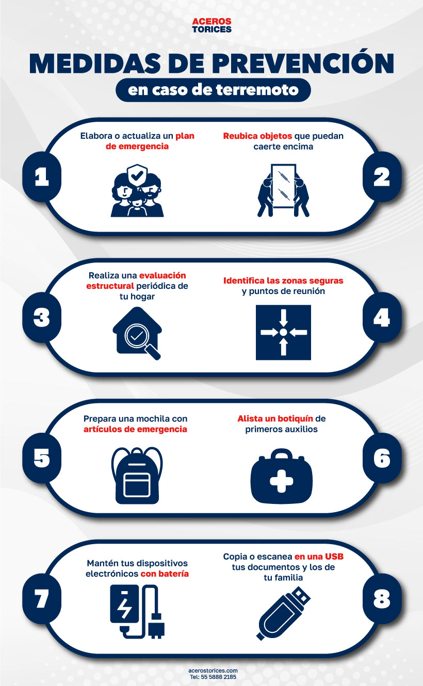
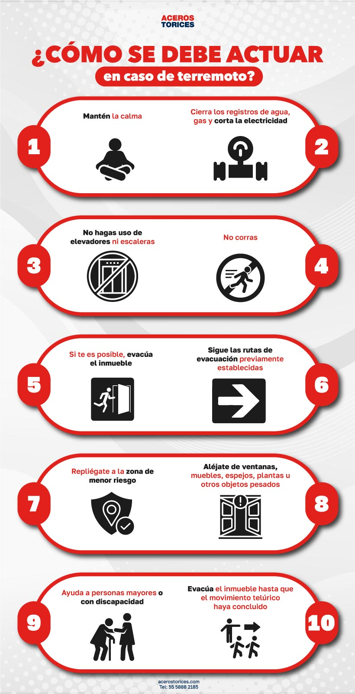
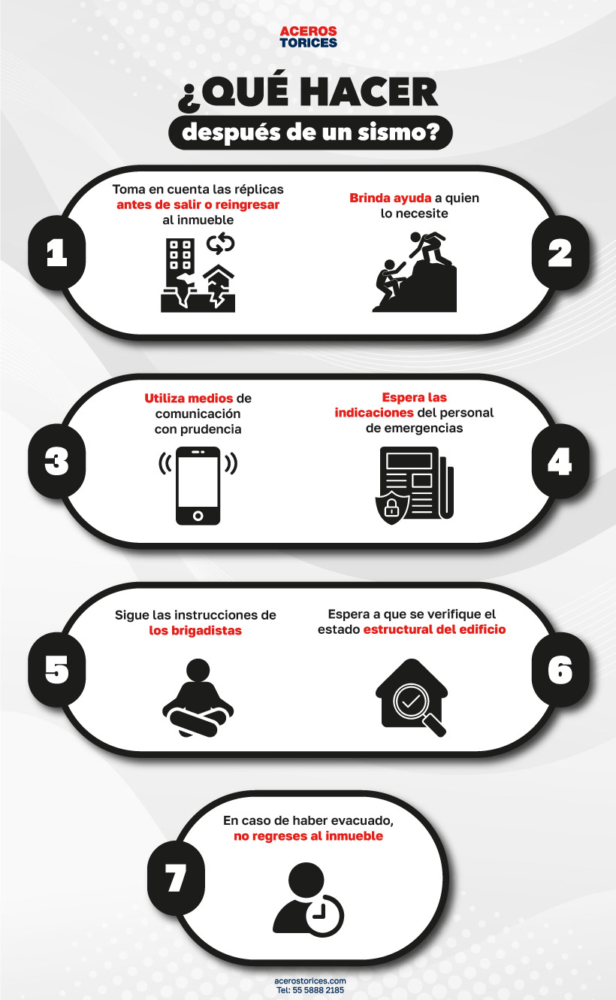

Antes del Terremoto

La preparación es clave para minimizar riesgos durante un terremoto.
Sigue estos consejos:
- Prepara un kit de emergencia con artículos esenciales.
- Asegura muebles y objetos pesados.
- Identifica zonas seguras dentro de tu hogar.
- Realiza simulacros con tu familia.
Descargar Lista de Kit de Emergencia
Durante el Terremoto

Mantén la calma y sigue estas recomendaciones:
- Refúgiate bajo una mesa resistente o junto a muros internos.
- Si estás en exteriores, aléjate de estructuras peligrosas.
- Protege tu cabeza y cuello con los brazos.
- No uses ascensores ni corras hacia las salidas.
Después del Terremoto

Una vez que el movimiento ha cesado, sigue estos pasos para garantizar
tu seguridad:
- Revisa si hay heridos y brinda primeros auxilios.
- Verifica fugas de gas, agua o daños estructurales.
- Escucha las indicaciones de las autoridades.
- Permanece alerta ante posibles réplicas.